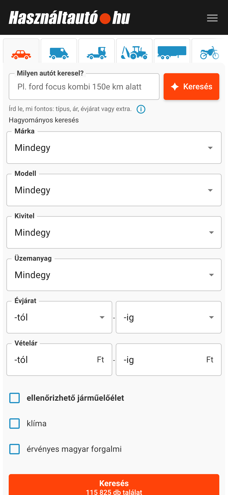

HAHU kereső — természetes nyelvű autókeresés


Írd le, milyen autót keresel. A bővítmény beállítja a szűrőket.
A HAHU kereső természetes nyelvű keresőmezőt ad a Használtautó.hu oldalához. A leírásodból az oldal saját keresési feltételeit állítja be, majd megnyitja a találatokat.
automata Honda HR-V 7 millióig, 2019-től
Egy mondatban megadhatod a márkát, a modellt, az árat, az évjáratot, a futásteljesítményt vagy a felszereltséget. Ékezetek nélkül is írhatsz. Ha egy feltételt nem sikerül beállítani, arról jelzés jelenik meg a találati oldalon. A mobilkép a Használtautó weboldal mobilnézetét mutatja; a bővítmény használatához asztali Chrome szükséges.
Telepítés GitHub Release-ből
A használathoz Chrome és a fejlesztőtől kapott API-kulcs kell. Backend-forráskódot vagy helyi backendtelepítést nem kell letöltened: a GitHub Release kiadási csomagja a működő backend címére lesz beállítva.
- A repó GitHub-oldalán nyisd meg a Releases részt, és töltsd le a legfrissebb kiadás ZIP-csomagját.
- Csomagold ki egy állandó mappába. Chrome-ban nyisd meg a
chrome://extensionsoldalt, kapcsold be a Fejlesztői módot, majd válaszd a Kicsomagolt bővítmény betöltése lehetőséget. A kicsomagolt kiadási mappát válaszd ki. - Nyisd meg a Chrome bővítménymenüjéből a HAHU kereső panelt. Illeszd be az API-kulcsot, majd válaszd az Ellenőrzés és mentés gombot. A panelen a hátralévő keresések száma is látható.
- Nyisd meg vagy töltsd újra a Használtautó keresőoldalát, írd le, milyen autót keresel, majd kattints az új mező melletti Keresés gombra.
A keresés szövegét külső AI-szolgáltató dolgozza fel. Az AI tévedhet, ezért ellenőrizd a beállított szűrőket és a találatokat. Ha valamelyik feltételt nem sikerült beállítani, a találati oldalon erről is jelzés jelenik meg.
Adatvédelem és API-kulcsok
- A bővítmény az API-kulcsot a
GET /v1/quotavégponton ellenőrzi, majd azAuthorizationfejlécben küldi el. A kulcs achrome.storage.localtárban marad meg, így a böngésző újraindítása után is elérhető. A böngészőprofilban ezért titkos adat van. - A kulcs bővítményből való eltávolítása csak az adott böngészőből törli azt. A szerveroldali visszavonást a fejlesztőtől kell kérni.
- Az értelmezési kérés (
POST /v1/interpret) csak a keresés szövegét, a módot és egy átláthatatlan kérésazonosítót küldi el. A keresés szövege az aktív oldal és kérés memóriájában marad; nem kerül URL-be vagy Chrome-tárhelyre. - A keresés átadásához a bővítmény a
POST /v1/plans/consumevégpontot használja. Az egyszer használatos token nem tartalmazza a keresés szövegét, és a felhasználása előtt eltávolítjuk az URL fragmentumából.
Licenc
A repó saját forráskódjára és eredeti dokumentációs anyagaira az MIT licenc vonatkozik: bárki felhasználhatja, módosíthatja és terjesztheti a licenc feltételeinek betartásával. A Használtautó.hu felületét ábrázoló képernyőképek és a weboldalon megjelenő védjegyek a saját jogosultjaikhoz tartoznak; ezekre az MIT licenc nem ad további felhasználási jogot.